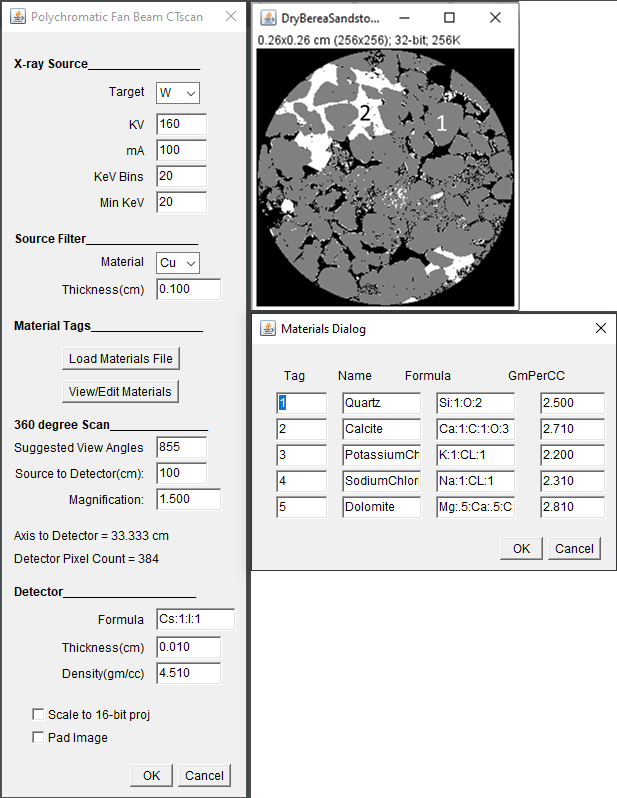
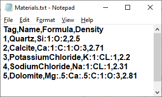
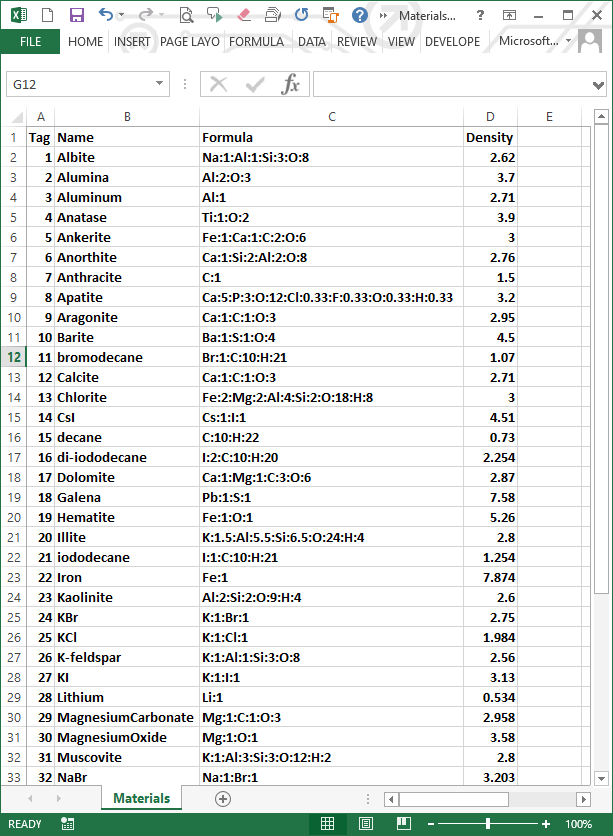

Using a 2D segmented image as input, CT Scan Simulator creates fan-beam or parallel-beam sinograms with either monochromatic or conventional (bremsstrahlung) X-ray sources.

Fan-beam Bremsstrahlung Source CT Scan Simulator User Dialog and Segmented Image
The source, filter, and detector settings are similar to those in the Beam Hardening Workbench tool. The main differences are the "KeV Bins" in the X-ray Source settings and the "Materials" and "360 degree Scan" settings. Select the "Scale to 16-bit" checkbox to multiply the sinogram by 6000 and convert to 16-bit integers reduce the size of the sinogram image file. Select the "Pad Image" checkbox if the image has data in the corners. Padding the image keeps the corners in the field of view during sample rotation.
KeV Bins
Bremsstrahlung versions of the simulator chop the source spectrum into energy bins. The counts for each fan-beam ray are computed and summed for all energy bins. These counts are used to compute the attenuation sinogram. Monochromatic versions compute the sinograms at a single energy.
360 degree Scan
Enter a source to detector distance in centimeters and a magnification. The sample rotation axis to detector distance and the required detector width are computed for you. An editable suggested number of view angles is also calculated for you.
Materials
Bremsstrahlung versions of the simulator must compute the attenuation coefficients at each KeV bin for all materials in the sample image. It does this using integer "tagged" image components. The top image on the right side of the figure shows a tagged image in which all pixels in the gray material have the value of 1 and all of the pixels in the white material have a value of 2. All other pixels are 0 and are ignored. Important: All tagged pixels in the image must have an assiciated tag material description or an error will occur.
The dialog box below the image shows the materials properties associated with each tag. In this example material 1 is quartz and material 2 is calcite. The materials lists are read from either text or csv files by clicking the "Load Materials File" button.

A Materials Text file example

A Materials CSV file example
Monochromatic versions of the plugin assume that the pixel values are the linear attenuation coefficients in cm-1.
Click the "OK" button to create the sinogram. Bremsstrahlung images may take some time since each energy bin is scanned. Parallel, monochromatic scans are pretty quick.